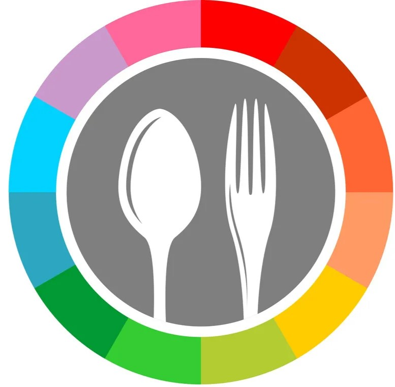

Projects
|

|
E.Commerce landing page
This project has been a labor of love, focusing on crafting a visually stunning and user-friendly experience for potential customers. From the moment visitors land on the page, they're greeted with captivating visuals and a sleek layout designed to entice and engage.
One of the key priorities was to ensure seamless navigation, making it easy for customers to explore the wide range of products offered by the website. Through strategic placement of buttons and clear call-to-action prompts, visitors are encouraged to take the next step and either start shopping or delve deeper into the website's offerings.
Moreover, the landing page is designed to be fully responsive, ensuring an optimal viewing experience across all devices, from desktops to smartphones.
|
Restaurant Website
I'm thrilled to share a project close to my heart: a restaurant website developed as part of a college research project, where I played a pivotal role in the frontend development.
Working collaboratively within a talented team, we embarked on this journey to create a digital space that not only showcased the culinary delights of the restaurant but also provided a seamless and immersive experience for visitors.
My focus on the frontend involved bringing our vision to life, ensuring a visually captivating interface that reflects the restaurant's ambiance and brand identity. From designing elegant menu animations to crafting intuitive reservation forms, every detail was meticulously crafted to enhance user engagement.
One of the most rewarding aspects of this project was seeing our collective efforts culminate in a sleek and modern website, seamlessly functional across various devices. It's a testament to the power of teamwork and the impact of combining creativity with technical expertise.
|

|
|
Stopwatch
I'm thrilled to share another project close to my heart: a stopwatch application developed during my internship, where I played a pivotal role in its creation.
Working collaboratively within a talented team, we embarked on this journey to design and develop a digital stopwatch that not only serves its core function with precision but also provides a seamless and intuitive user experience.
My focus on this project involved leveraging my frontend development skills to bring our vision to life. From designing the sleek and minimalist interface to implementing precise timing functionalities, every detail was meticulously crafted to ensure optimal performance and user satisfaction.
One of the most rewarding aspects of this internship task was seeing our collective efforts culminate in a functional and user-friendly stopwatch application, ready to serve its purpose in various contexts.
|
Tic-Tac-Toe
I'm thrilled to share another milestone from my internship journey: the development of a Tic Tac Toe game as part of our internship project.
Working collaboratively within a talented team, we embarked on this journey to create a digital adaptation of this classic game, aiming to deliver not just entertainment but also a seamless and engaging user experience.
My role in this project involved leveraging my frontend development skills to bring our vision to life. From designing the game board and user interface to implementing the game logic, every aspect was meticulously crafted to ensure smooth gameplay and user satisfaction.
One of the most rewarding aspects of this internship task was witnessing the culmination of our efforts in a functional and enjoyable Tic Tac Toe game, ready to entertain players of all ages.
|

|
|